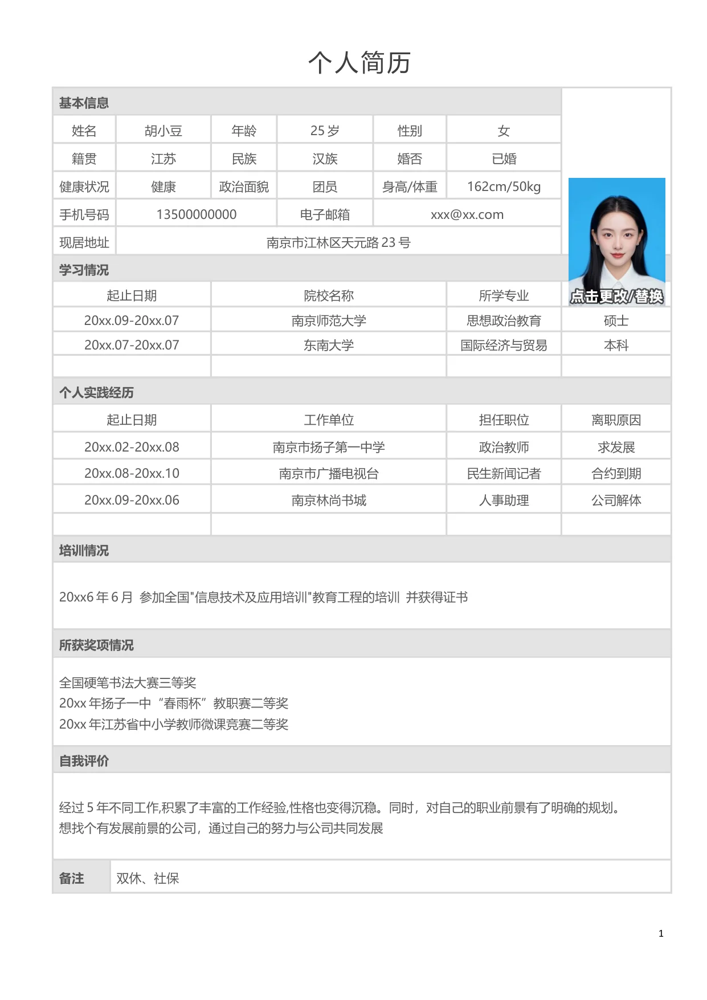

基本信息
姓名
胡小豆
年龄
25 岁
性别
女
籍贯
江苏
民族
汉族
婚否
已婚
健康状况
健康
政治面貌
团员
身高/体重
162cm/50kg
手机号码
13500000000
电子邮箱
xxx@xx.com
现居地址
南京市江林区天元路23 号
学习情况
起止日期
院校名称
所学专业
学历
20xx.09-20xx.07
南京师范大学
思想政治教育
硕士
20xx.07-20xx.07
东南大学
国际经济与贸易
本科
个人实践经历
起止日期
工作单位
担任职位
离职原因
20xx.02-20xx.08
南京市扬子第一中学
政治教师
求发展
20xx.08-20xx.10
南京市广播电视台
民生新闻记者
合约到期
20xx.09-20xx.06
南京林尚书城
人事助理
公司解体
培训情况
20xx6 年6 月 参加全国"信息技术及应用培训"教育工程的培训 并获得证书
所获奖项情况
全国硬笔书法大赛三等奖
20xx 年扬子一中“春雨杯”教职赛二等奖
20xx 年江苏省中小学教师微课竞赛二等奖
自我评价
经过5 年不同工作,积累了丰富的工作经验,性格也变得沉稳。同时，对自己的职业前景有了明确的规划。
想找个有发展前景的公司，通过自己的努力与公司共同发展
备注
双休、社保
个人简历
1